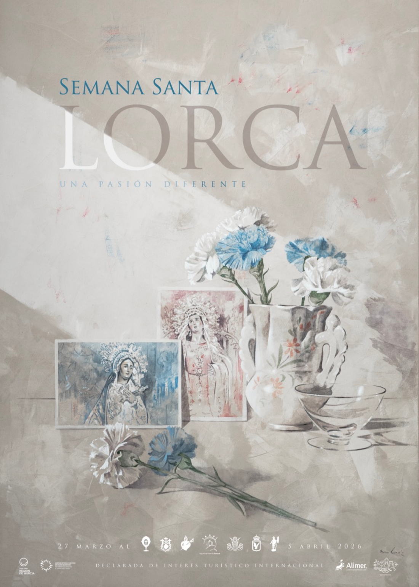

"Una pasión diferente"
La Semana Santa de Lorca está reconocida internacionalmente por sus desfiles bíblico-pasionales, un gigantesco auto sacramental único en el mundo donde los grupos histórico-bíblicos del Antiguo Testamento desfilan por la carrera oficial a pie, a caballo y en carros romanos.
Sus bordados en seda y oro son los primeros conjuntos textiles de España declarados Bien de Interés Cultural. Los museos del Paso Azul y del Paso Blanco custodian piezas únicas como el Manto de la Virgen de los Dolores o el Estandarte de la Oración en el Huerto.